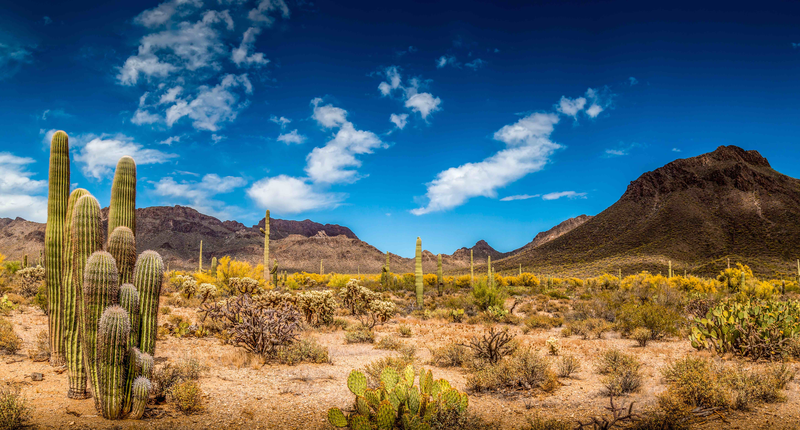
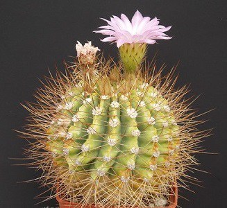
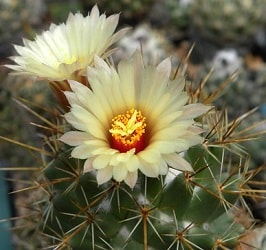

"The Ultimate Cactus Encyclopedia:
Types, Information, and More"
Types, Information, and More"

Deserts and other hot, dry conditions are ideal for growing some kinds of plants,
such as cactus. The stem of the cactus plant has sharp points that resemble needles and
is unusually thick. The plant doesn't have any leaves.The sturdy, fleshy cactus plant
can be found all across the world.
Read Now
What Type of Plant is a Cactus?
The succulent plant family, which includes cacti, is capable of absorbing and
storing significant amounts of water in both their leaves and roots. They may go without water
for very extended periods of time in this way. The thorns serve a comparable purpose. Dew
can be absorbed by them, adding additional moisture.
The cactus belongs to the Cactaceae genus of plants. There are roughly 3,000 species and 300 genera. Because they are simple to maintain as houseplants and are regarded as beautiful, the family comprises numerous well-known species.
The forms of the plants can be used to classify them. There are three different shapes: disc, sphere, and column. Some varieties of cactus can grow rather enormous, while others stay quite little.
There are numerous different varieties of succulents, but none of them have areoles, which are the locations where the thorns (spines) develop. This is typical of cacti and other members of the family.
North, Central, and South America are home to the majority of cacti. They can be found there in rainforests, high mountain slopes, steppes, and deserts. They are experts at adjusting to their environment. Only a few species are found in tropical rainforests. They then develop as epiphytes on tree branches where, despite heavy precipitation, dry conditions prevail because of the water's quick flow.
Our Gallary

Read Now
Acanthocereus
Argentina is home to the cactus genus Acanthocalycium, which has numerous species.

Austrocylindropuntia
Since the word Austro implies "southern," this Cylindropuntia is native to South America.

Read Now
Coryphantha clava
The species grows in dry grassland on limestone gravel or alluvial soils at the foot of hills and on ridges.